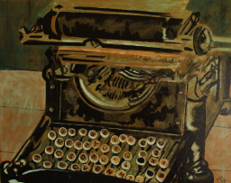

Zlevněné vstupné je určené pouze pro děti a studenty do 26 let, důchodce nad 60 let a partnery Centra Omega.
Štítky
Kurz
Naučné
Praktické dovednosti
Popis akce

Přemýšlíte o změně kariéry? Láká vás být spisovatelem? Nebo se jen potřebujete zlepšit v psaní textů? Nejen pro Vás připravilo centrum Omega kurzy autorského psaní.
S Mgr. Ilonou Uhekovou proberete vše, co se této oblasti týká. Opráší základy stylistiky, probere nejčastější chyby v pravopisu a seznámí Vás s mnoha zajímavými zdroji inspirace.
Cena kurzu je neměnná. Zaplacení částky Vás opravňuje ke vstupu na všechny lekce. Nevyužité vstupné se nevrací. Prodej vstupného na hlavní recepci centra Omega. Na akci neplatí dárkové poukazy centra Omega-